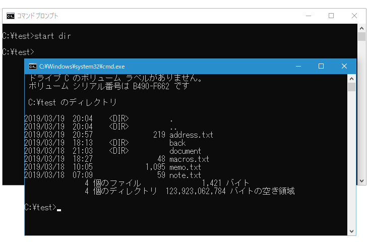
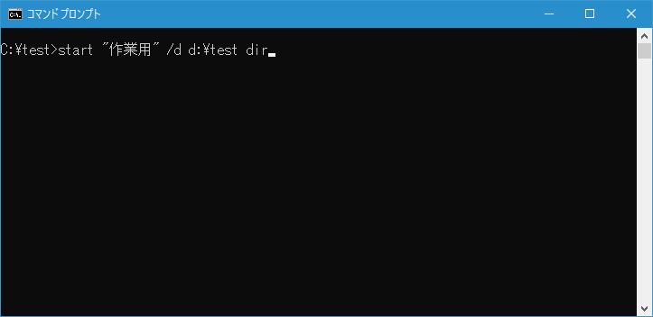
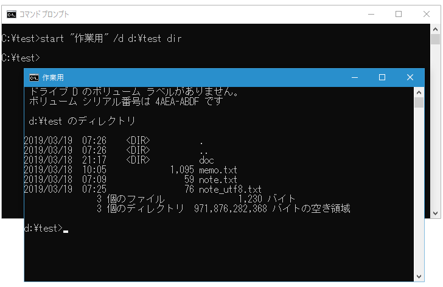
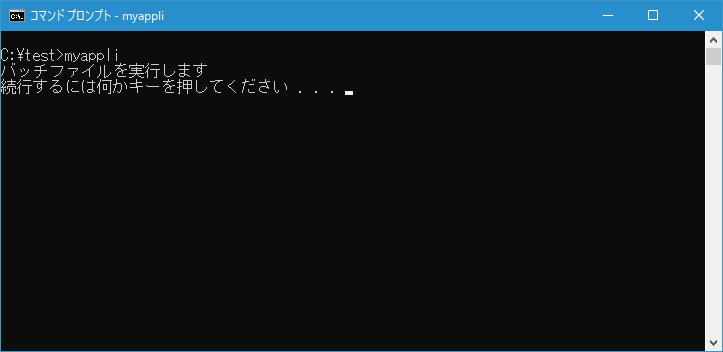
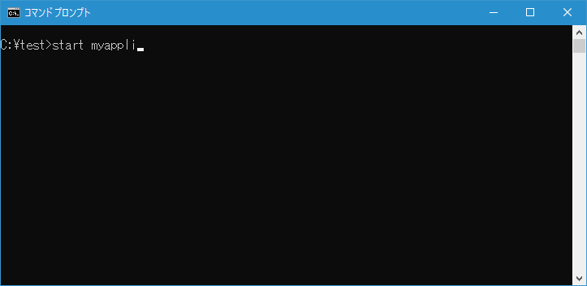
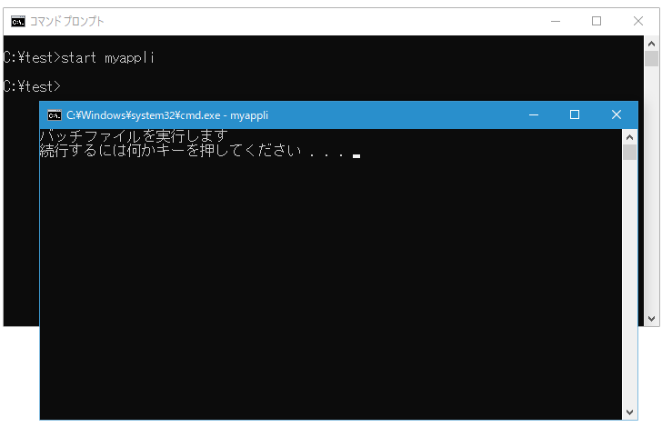
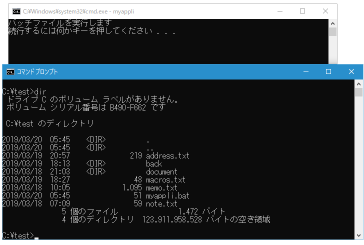

別ウィンドウでコマンドを実行(START)
別のウィンドウでコマンドを実行できる START コマンドの使い方について解説します。
STARTコマンドの使い方
START コマンドを実行すると新しいウィンドウでコマンドを実行することができます。書式は次の通りです。
START ["タイトル"] [/D パス] [/I] [/MIN] [/MAX] [/SEPARATE | /SHARED]
[/LOW | /NORMAL | /HIGH | /REALTIME | /ABOVENORMAL | /BELOWNORMAL]
[/NODE <NUMA ノード>] [/AFFINITY <16 進数の関係マスク>] [/WAIT] [/B]
[コマンド/プログラム] [パラメーター]
オプションは色々とあるのですが、基本的な使い方はは次のとおりです。引数にコマンドやプログラムを指定で別のウィンドウで起動します。
START [コマンド/プログラム] [パラメーター]
それでは実際に試してみます。
別のウィンドウでコマンドを実行する
例えば現在のコマンドプロンプトとは別のウィンドウで DIR コマンドを実行するには次のように実行します。
start dir
START コマンドを実行すると別のコマンドプロンプトが起動して、引数に指定したコマンドが実行されます。

指定しなければ別のコマンドプロンプトのカレントディレクトリは起動元のコマンドプロパティと同じです。
-- --
新しく起動するコマンドプロンプトのタイトルを指定するにはダブルクォーテーションで囲って指定します。また新しく起動するコマンドプロンプトのカレントディレクトリを指定するには「/D パス」オプションを付けて実行します。例えば現在のコマンドプロンプトとは別のウィンドウをタイトル"作業用"、カレントディレクトリ d:\test にして起動し DIR コマンドを実行するには次のように実行します。
start "作業用" /d d:\test dir
START コマンドを実行すると別のコマンドプロンプトが起動して、引数に指定したコマンドが実行されます。この時新しいコマンドプロンプトのタイトルとカレントディレクトリが指定した値に設定されています。


-- --
他にもウィンドウを最小化した状態で起動するには「/MIN」オプション、最大化状態で起動するには「/MAX」オプションが用意されています。
別のウィンドウでプログラムを実行する
テスト用に簡単なプログラム(実際にはバッチファイル)を用意しました。このプログラムをコマンドプロンプトから実行すると何かキーを押すまで処理がとまります。

別のプログラムを実行しつつ、元のコマンドプロンプトでは別の作業を行いたい場合に START コマンドを使うと便利です。例えば現在のコマンドプロンプトとは別のウィンドウで他のプログラム myappli を実行するには次のように実行します。
start myappli
START コマンドを実行すると別のコマンドプロンプトが起動して、引数に指定したプログラムが実行されます。


別のウィンドウで起動したプログラムが実行中であっても、元のウィンドウでは別の操作を行うことができます。

-- --
START コマンドを使って別のウィンドウでコマンドやプログラムを実行する方法について解説しました。
( Written by Tatsuo Ikura )

著者 / TATSUO IKURA
初心者～中級者の方を対象としたプログラミング方法や開発環境の構築の解説を行うサイトの運営を行っています。